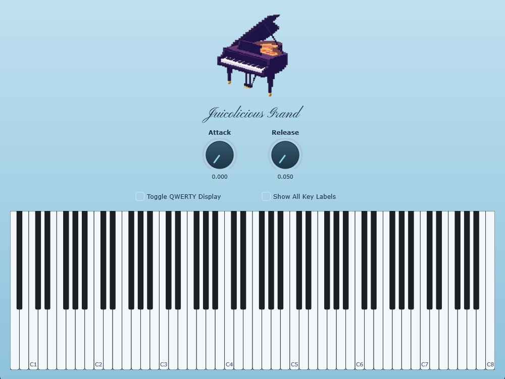

About
Juicolicious Grand is a sampled grand piano built from real recordings, playable in any DAW that supports VST3 or AU plugins, or on its own as a standalone app.
- Four velocity layers per note, blended so tone and volume follow how hard you play.
- Damper release sounds when keys are lifted, with the top keys ringing freely like a real grand.
- Sustain pedal, Attack and Release for shaping how notes start and end.
- Play three ways: with a MIDI keyboard, your computer keyboard, or the mouse.
Installer blocked?
The installer isn't code signed yet, so Windows and macOS warn before running it. It's safe to continue.
Windows
- If your browser says the file isn't commonly downloaded, open the download menu and choose Keep.
- On the Windows protected your PC screen, click More info, then Run anyway.
macOS
- Open the installer. When macOS says it can't be opened, click Done.
- Open System Settings, go to Privacy & Security, scroll down, and click Open Anyway.